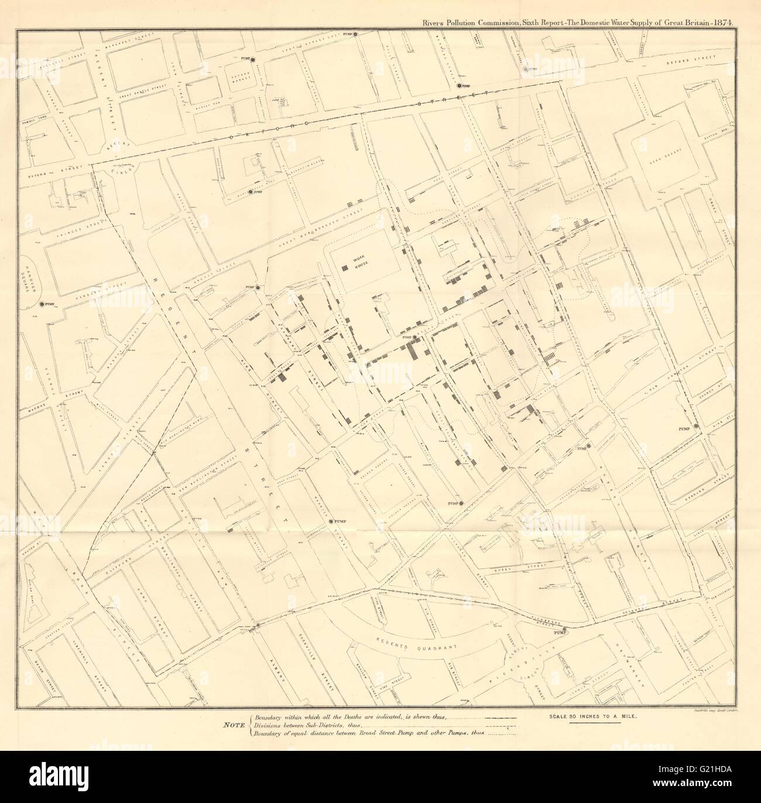
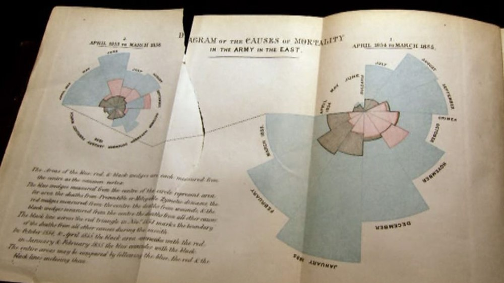
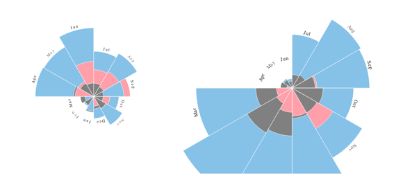
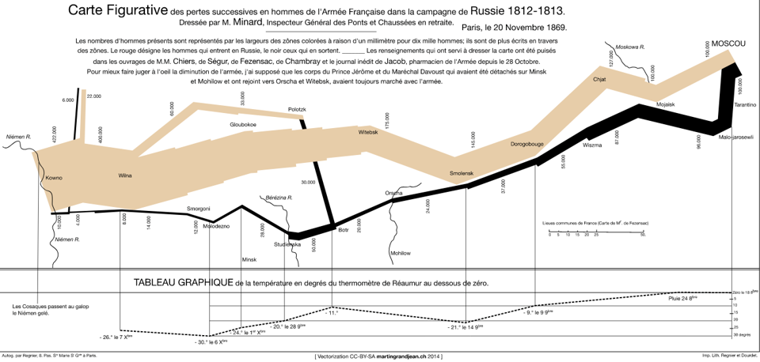
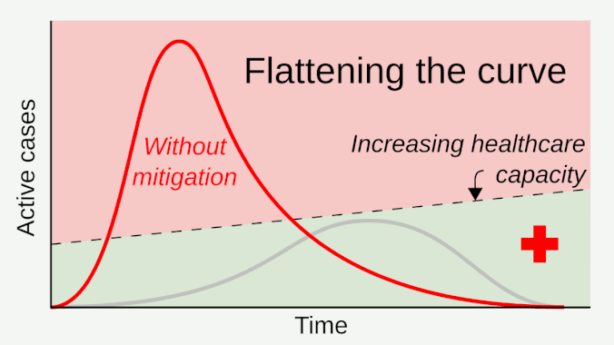
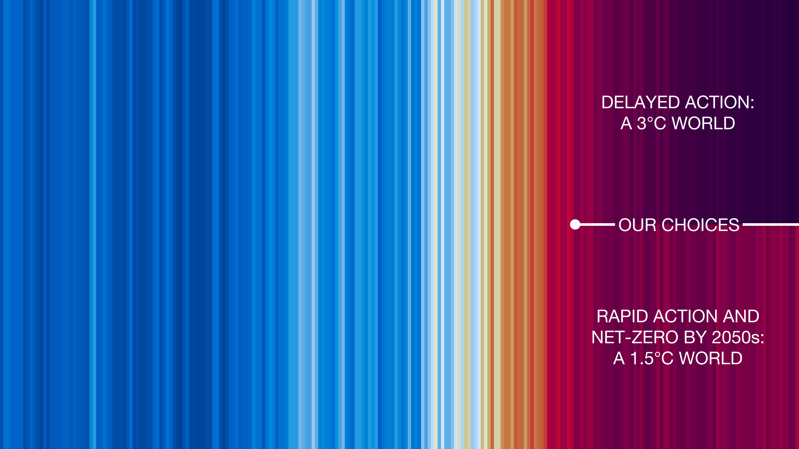
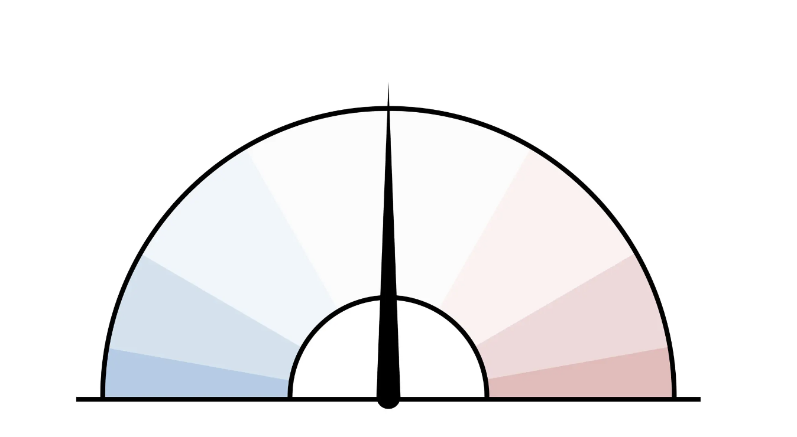
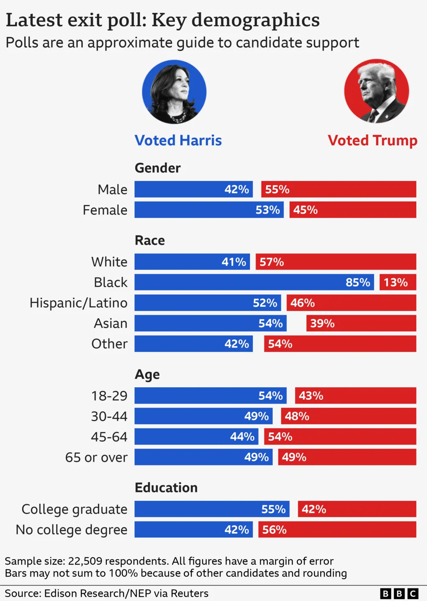
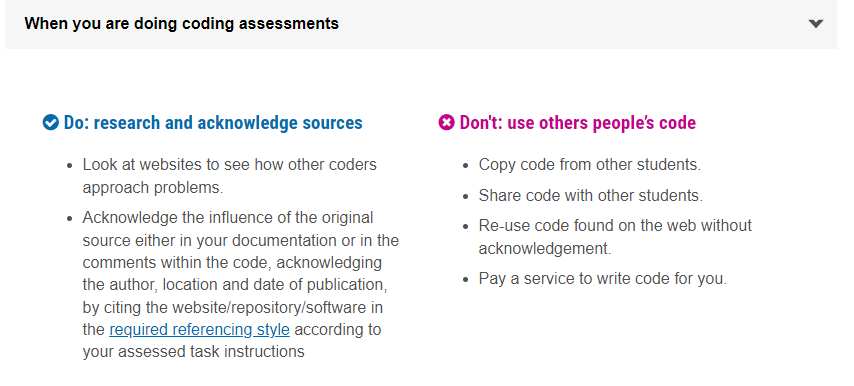

ETX2250/ETF5922
An Introduction to Data Visualisation
Lecturer: Kate Saunders
Department of Econometrics and Business Statistics
- etx2250-etf5922.caulfield-x@monash.edu
- Lecture 1
- <a href=““>
Today’s lecture
What we’ll cover:
Unit overview and details
An Introduction to Data Visualisation
Societal importance of data visualisation
Learn about the different types of data
Getting you set up in R (Hands on)
Teaching Team
About your Lecturer
Kate Saunders
Lecturer at Monash University
🎓 PhD in Statistics
🌏 Home State is Queensland
👨💻 Research is in statistics of climate extremes
👩💻 Passionate about open data, data visualisation and data ethics
👨💻 Started R coding in 2012 (before tidyverse!)
❤️ Hobby is playing basketball.
About your Instructor
Krisanat Anukarnsakulchularp
PhD Candidate at Monash University
👨🎓 Graduated in Masters in Business Analytics
👨🎓 Monash local since undergrad
🌍 Home Country is Thailand
👩💻 Just started his PhD, he’s researching network visualisation
👩💻 Recently published an R package called animbook!
❤️ Hobby is playing music.
About your Instructor
Bets Ruscoe
PhD Student at Monash University
👨🎓 Studied Econometrics at Monash
🎓 Worked at Deloitte in the AI & Data team, before coming back for PhD
👩💻 Lover of R and wanted to introduce R at work over Power BI
🌐 Just returned from a trip to Taiwan
❤️ Misses eating dumplings everyday for breakfast!
About your Instructor
Javad Vahdat Atashgah
PhD Candidate at Monash University
🎓 Just started his PhD in bioformatics
🌏 Home country is Iran
👨💻 Worked in fields of bioinformatics, finance, hydrology
👩💻 Research underpinned by data and data science
❤️ Loves finding was to simplify complex statistical ideas using viz!
Unit Details
Why take this unit?
Importance of Data Visualisation and Communication
Data visualisation is a starting point of every Business Analytics Project.
A picture says a 1000 words: We can turn data into insights using visualisation
Search and show patterns, trends, structure, irregularities, relationships among data
Integral for communicating results from an analysis with clarity and efficiency
About the unit
Summer Semester is an INTENSIVE unit!
What that means:
We will cover 12 weeks of material in 4 weeks
We will cover 3 lectures each week
That’s ~36 hours of study each week!
You will need to keep up with the material
Coming to classes and consultations will help you
Last minute cramming won’t be possible
Unit Design
Note
Compared to normal semesters the content is condensed.
There will be pre-recorded material for you to watch in your own time.
Watch any pre-recorded material before class
Lectures and workshop material will run together as a block.
The balance of lecture material to in class activities to tutorial exercises will change a little each week.
The unit is running flexibly so if you want to attend class on zoom you can.
Learning Objectives
At the end of this unit you will be able to:
Critically evaluate the quality of a data visualisation using the principles of graphical excellence
Successfully create high-quality data visualisations for a given dataset using software, such as Power BI or R.
Develop the skills to effectively use data visualisations to communicate insights to an audience
Develop the skills to effectively use data visualisations to communicate in the appropriate medium, report writing, in presentations and digital storytelling.
Apply advanced topics in data visualisation, such as using interactivity and animation to enhance communication.
Overview of the unit
Week 1: Introduction to Data Visualisation
Lecture 1: Getting Started with Data Visualisation
Lecture 2: The Good, the Bad and the Ugly of Data Visualisation
Lecture 3: Data Visualisation in BI
3 quizzes due end of the week
Overview of the unit
Week 2: Visualisation in R
Lecture 4: Visualisation in R: Plots of 1 - 2 Variables
Lecture 5: Data Wrangling in R
Lecture 6: Visualisation in R: Plots of 2 or more Variables
3 quizzes due end of the week.
Assignment 1 will cover the first two weeks of material.
Overview of the unit
Week 3: Language of Visual Communication
Lecture 7: Iterating your Plot Design
Lecture 8: The Art of Visual Storytelling
Lecture 9: Guest Lecture by digital journalist: James Goldie
3 quizzes due end of the week.
Overview of the unit
Week 4: Advanced Topics in Visualisation
The training wheels are off!
Lecture 10: (TBC) Visualising Uncertainty and Missing Data
Lecture 11: Interactivity and Animation
Lecture 12: Exam Revision
3 quizzes due end of the week.
Assignment 2 will cover the last two weeks of material.
Assessement
Assessment: Quizzes
Quizzes
12 quizzes related to each lecture and tutorial
Count the best 10 out of 12 quizzes
This allows you two “off” quizzes for sudden and short term emergencies.
Quizzes are worth 1% each
10% of your total grade
Quizzes will be due at the end of each week, so 3 quizzes due each Friday.
No special consideration for quizzes
Assessments: Assignments
Assignments
2 assignments worth 20% each
40% of your total grade
Assignment 1 will cover content from weeks 1 and 2
Assignment 2 will cover content from weeks 3 and 4
Apply for special consideration centrally. (This includes short extensions of 48 hours)
If you need special consideration, apply ASAP and no later than 11.55 pm on the day your assessment is due.
Assessments: Exam
Final exam
Exam is in the Febraury Summer Semester Exam Block
50% of your total grade
This is a Hurdle Assessment
You must pass to pass the unit
Getting Help
Where to go if you need help
1. Ask your peers using the discussion forum
Suitable for:
General questions about course materials, tutorials, R or assignment clarifications.
Any emails regarding general matters will be redirected to the discussion forums.
Sharing helps you learn from each other!
Also I don’t want to answer the same question twice (three times, four times etc.)
Do not post code from your assignments or any assignment hints to the discussion portal. I may deduct marks
Where else to go if you need help
2. Attend Consultation
Suitable for:
When you need more specific one-on-one help
Working through problems with your tutor
Getting a head start on your assignments
Support debugging your code
Asking detailed questions about your assignments
Getting additional feedback on your assessments
Being really nerdy about the unit!
For personal and urgent inqueries
Unit Email
Suitable for:
For personal questions or issues email etx2250-etf5922.caulfield-x@monash.edu.
Response times are within 1 - 2 days but may vary during busy periods.
Also email if you notice issues with assessments or Moodle.
For remarking, get feedback on your assessment from your tutor and if this does not provide clarity email within 10 days of the due date.
Do not direct emails to my staff account, I receive a high volume of high volume of emails and they risk going into a black hole and never being seen again!
Time to get started
Let’s develop some intuition for why data visualisations are important!
Famous Historical Visualisations
A history lesson
Cholera
In 1854 there was a breakout of the cholera disease in London killing 616 people.
At the time it was speculated that the disease was carried in the air.
A physician called John Snow was skeptical and began to collect data…
Original Map
Close Up

Consequences
Map of outbreaks
The map showed the cholera was more prevalent around a water pump on Broad Street.
The pump was closed down.
Eventually it was established that cholera is a water-borne disease.
Data visualisation saves lives!
Crimean War
Florence Nightingale ❤️
At the same time Great Britain was at war against Russia in the Crimean peninsula.
Florence Nightingale is famous as a nurse who treated the wounded soldiers.
She also advocated to the British Parliament for more sanitary conditions in military hospitals.
She knew the power of using data visualisation.
Original Rose Chart
Recreation of Nightingale’s Rose chart
- Blue areas: Preventable deaths
- Red areas: Deaths from battle wounds
- Black areas: Other causes
Aftermath
Rose chart
The improved sanitation at military hospitals was eventually implemented in civilian hospitals.
Data visualisation saves lives.
Florence Nightingale became the first female member of the Royal Statistical Society.
Napoleon
Background
In 1812 Napoleon thought it was a good idea to invade Russia.
This campaign was a disaster for the French.
Engineer Charles Joseph Minard captured the extent of this catastrophe using visualisation.
Minard’s Plot
Minard’s plot
Infographic
This visualisation provides information on 6 variables in one chart.
Number of troops
Whether troops advance or retreat
Temperature and time
Longitude and latitude
Despite the clear message that invading Russia in winter is a bad idea, some people did not learn this lesson.
A bit more on Minard
1
High Profile Data Visualisations
COVID19 Pandemic
Background
In the early stages of the COVID19 pandemic, hospital capacity was not able to cope with the amount of cases.
Collectively as a society we needed to to slow the spread of the virus and reduce the load on our healthcare systems.
People needed to understand and listen to the public health advice about hand washing, social distancing and quarantining etc.
Let’s look at some visualisations that helped get the importance of this message across!
Flattening the Curve
A visualisation showing the importance of slowing the spread and reduce the peak in cases (Source).
Communicating Climate Change
Background
Climate Change is leading to more frequent and more severe weather
There are severe socio-economic consequences as a result of more weather and climate extremes.
It is important to communicate with people that our climate is changing.
It is also important to communicate that if we reduce our emissions and take rapid action we can slow down the impacts of climate change.
Professor Ed Hawkins (University of Reading, UK) created data visualisations to help with this!
Warming Spiral
A visualisation showing the climate is warming.
This visualisation was shown at the Rio Olympics in 2016!
Future Climate
A visualisation showing that our choices today will impact our rate of future warming.
Politics
Why visual political data?
Visualising election data helps people understand and trust the results
Common election visualisaitons focus on voter behaviour, such as differences in voters between regional areas and cities, or difference based on voters demographics (e.g. age, gender, income).
Visualisation also occurs in the polls in the lead up and on election night
Visualisation is also used by politicians to support their policy platforms
2024 US Elections: Polling
Voter Needle: Shows election results in context as they come in and displays the uncertainty in the total as votes are counted.
2024 US Elections: Demographics
2024 US Elections: Policy
And here is the chart credited with saving President Trump’s life.
It doesn’t adhere to the principles of graphical excellence, we’ll show you why and provide a better example later!
Types of data visualisation
A world of possibilities
Matching the data the plot
There are lots of different kinds of visualisations.
But before we can create these visualisations …
Need to learn:
Which type of plot works best for what type of data?
What are the different kinds of data variables?
What are different types of data?
What can those different kinds of data represent?
What can you show with that data?
In other words: we need to learn how to go from Data-to-Viz!
Discrete Variables
Discrete Variables
Discrete variables can take only specific, separate values within a range.
Often represent counts or whole numbers.
Example: Number of students in a class, number of cars sold.
Characteristics:
Finite set of values1 (e.g. Dice rolls takes values 1 to 6.)
Cannot take on fractional values between two distinct points (e.g. can’t saw in student in half!)
Categorical Variables
Categorical Variables
Categorical variables are a type of discrete variable
Categorical variables represent categories or groups.
Often represented by labels or names rather than numbers.
Two types of Categorical Variables:
Nominal: Categories with no logical order (e.g. your names)
Ordinal: Categories with a meaningful order (e.g. low, medium, high)
Nominal Variables
Nominal Variables
- Nominal variables are a type of categorical variable with no ordering.
- Example:
- Blood type (A, B, AB, O)
- Types of pets (dog, cat, bird)
- People’s names (Kate, Kris, Bets, Javad).
- Characteristics:
- Purely descriptive labels.
- Cannot rank or order categories.
Ordinal Variables
Ordinal Variables
- Ordinal variables have a natural order, but differences between values need not be meaningful.
- Examples:
- Satisfaction levels (satisfied, neutral, dissatisfied),
- Education levels (high school, bachelor’s, master’s).
- Characteristics:
- Categories can be ranked.
- Distances between categories may not be equal.
Continuous Variables
Note
- Continuous variables can take any value within a range.
- Typically represent measurements (e.g., height, temperature).
- Examples:
- Weight of a person (kg)
- Time taken to complete a task (minutes).
- Characteristics:
- Infinite number of possible values within a range.
- Can be divided into smaller increments.
Step 1: Is understanding what your data is.
Step 2: Is understanding what you can show with your data.
Common types of data
Spatial Data
- Spatial data represents data related to physical locations or areas.
- Examples:
- Regions on a map (Country names) - Discrete
- Geographic coordinates (latitude, longitude) - Continuous
- Characteristics:
- Useful for mapping and showing spatial patterns.
Common types of data
Temporal Data
- Temporal data represents data associated with time.
- Examples:
- Daily temperature readings (°C) - Continuous
- Number of natural disasters each year (fires, floods) - Discrete
- Characteristics:
- Follows a sequential order.
- Useful for trend analysis and time series forecasting.
Wrap up
Summary
Data visualisation is important!
We’ve seen examples of high profile and important data visualisations.
We’ve learnt when data visualisation is done right, it is a powerful tool for communication.
We’ve also seen examples of when data visualisation can be misleading.
An important part of this unit will be teaching you how to be critical of data visualisation.
You will learn what makes a good or bad visualisation, and to identify when a visualisaton is misleading.
We will revisit some of these examples in later lectures.
Summary
Data to Visualisation
You’ve also learnt there are lots of different kinds of visualisations
We’ve learnt about different types of variables and what these variables can represent
This will be important for when we start building our own data visualisations
Take a closer look at the Data-to-Viz website to see what kind of data matches best with what plot.
Getting set up
Time for software
First steps
Getting set up
By the end of this unit you’ll be creating your own amazing, data visualisations
Before you can do that we need to get you set up with the software you’ll use in this unit
We’ll now go through the steps to install R and RStudio
Think about R as the paint (raw materials) and RStudio as the paintbrush and canvas (tools we need to bring the artwork together).
Installing R and RStudio
We’ll open RStudio to create data visualisations using R.
Step 1: Install R
- Got to https://www.r-project.org/
- Click "download R"
- Select a mirror (I use the Melbourne one)
- Install for your operating systemStep 2: Install RStudio
- Got to https://www.rstudio.com/products/rstudio/download/
(you only need the free version)
- Select download for your system
- Follow the prompts to installBut Why?
Why do we need a Programming Language
It allows us to have reproducible steps, which can be applied for many different data sets
Make sure the analysis is not just point and click, you can work as a team on it on the same code
It also means we can more easily create our own bespoke visualisations
Why do we use R?
It has been around for a while.
It is regularly maintained and is open source.
It is beginner friendly
Even if you use other languages, you might still use R for your data visualisations
Getting Started in R
Learning a new language is hard!
You need to think about grammar and structure, and how to communicate well in it!
You will make mistakes, lots of them.
Below you see code that plots points showing the GDP per capita against life expectancy. The points are coloured by country and the size of the points shows the population.
It might look impossible now, but by the end of this semester you will be able to write this yourself!
Live Coding
Topics covered
- Different parts of RStudio
- Working directories
- Reading in data
- R Projects
- Assigning variables
- Different variable types
- R Packages
Checklist
By the end of this lecture:
You should:
Have installed R and RStudio
Be able to set up a Project in R
Be able to read in data from a file
Be able to install packages and load the package libraries
Be able to assign variables and run basic functions
Strategies for learning R
How to learn R
Come to lectures and ask questions.
Look at your tutorial questions before the tutorial, & go along with specific questions.
Try to avoid copying code - instead focus on writing and understanding each bit.
Practice! The Tidy Tuesday data sets are a really fun place to start.
How to learn R
Have questions outside of class? Post questions on our discussion forum. You can also test out your knowledge by answering other’s questions.
Completely stuck? Come to a consultation and talk it through with your tutor or lecturer.
Try talking to a figurative rubber duck - sometimes just explaining the problem can help you find a solution.
Use ChatGPT to help get you started, or to diagnose your errors
Academic integrity
How do we use these online resources with integrity?

Some examples here
ETX2250/ETF5922
Social Distancing
A visualisation showing the importance of social distancing (Source).